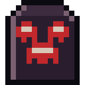

Guides / 03

Combat
The action screen, the three control modes, shove, aim, weapons and how to escape.
When a zombie that is after you gets within 25 m, the game asks you to stop somewhere safe and opens the action screen: a pixel art scene of the place where you are, with the real streets, cars and buildings. You can also open it with the big Action screen button on the map.
Zombies within 120 m join the fight, a few at a time. At the base in safety, or while crossing an avenue, no fight starts.
The three control schemes
Choose in Settings → CONTROLS (or by tapping the status card during a fight):
- Simple (default): one stick to walk and the FIGHT button. With it on, you face the nearest zombie; tap the right half of the screen to strike or shoot and the left half to shove. Running turns it off.
- Two sticks: the right one aims; tapping the screen strikes and shoves.
- Automatic: only the walking stick; strikes, shots and shoves happen on their own.
Shove
The shove is your best defense: it knocks down or staggers, frees you from whoever grabbed you and lowers panic. It costs stamina and has a short wait between one and the next.
Aiming and hitting
- Choose the TARGET: head, body or legs.
- On the head, a strike does more damage, but it can slip to the shoulder (less with more skill). A headshot does 2.5× damage.
- Destroyed legs make the zombie crawl.
- Hits with the tip of the weapon can be critical.
Stamina
Running burns stamina fast; standing still brings it back. With little stamina, your strikes lose force. Fatigue, fever, cold, heat and pain lower your maximum stamina.
Crouch
CROUCH makes you slow and unable to run, but distracted zombies take twice as long to notice you and need to be much closer. From behind, out of their sight, you can take them down silently.
Weapons
- Melee (knife, bat, machete, axe, sledgehammer, katana…): wear down with every strike that lands, and break. You can repair them at the workbench or with tape and nails.
- Firearms (pistol, revolver, shotgun, .22 rifle, hunting rifle, submachine gun, assault rifle): don't wear down, but every shot draws zombies within 150 m. The silencer muffles a few pistol shots.
- Bow and crossbow: almost silent; some of the arrows come back after the fight.
- Throwables: bottle, rock, alarm clock and firework distract; the molotov sets the ground on fire.
Reloading with ammo in your pocket is fast; if it is only in the backpack, it takes twice as long.
Different zombies
Besides the common one, there are uniformed zombies: the inmate is fast, the soldier and the firefighter take a lot of punishment (the firefighter doesn't catch fire), the police officer wears a vest, the backpacker carries more things. The Brute is huge, slow and takes six times more.
Leaving the fight
- The door icon (Exit) appears when no one is within 10 m and no one is after you.
- Stay 40 m from everyone who saw you for a few seconds and they lose you.
- Or run to the red edge of the scene.
Guias / 03
Combate
A tela de ação, os três controles, empurrão, mira, armas e como fugir.
Quando um zumbi que está atrás de você chega a 25 m, o jogo pede que você pare num lugar seguro e abre a tela de ação: a cena em pixel art do lugar onde você está, com as ruas, os carros e os prédios de verdade. Também dá para abrir pelo botão grande Tela de ação do mapa.
Zumbis a até 120 m entram na luta, alguns de cada vez. Na base em segurança ou atravessando uma avenida, não começa luta.
Os três controles
Escolha em Ajustes → CONTROLES (ou tocando no cartão de status durante a luta):
- Simples (padrão): um analógico para andar e o botão LUTAR. Com ele ligado, você encara o zumbi mais perto; toque na metade direita da tela para golpear ou atirar e na esquerda para empurrar. Correr desliga.
- Dois analógicos: o direito mira; toque na tela golpeia e empurra.
- Automático: só o analógico de andar; golpe, tiro e empurrão saem sozinhos.
Empurrar
O empurrão é a sua melhor defesa: derruba ou desequilibra, solta você de quem te agarrou e baixa o pânico. Ele gasta fôlego e tem uma pequena espera entre um e outro.
Mirar e acertar
- Escolha o ALVO: cabeça, corpo ou pernas.
- Na cabeça, o golpe dá mais dano, mas pode escorregar para o ombro (menos com mais habilidade). Tiro na cabeça dá 2,5× de dano.
- Pernas destruídas fazem o zumbi rastejar.
- Acertos com a ponta da arma podem ser críticos.
Fôlego
Correr gasta fôlego rápido; parado ele volta. Com pouco fôlego, os golpes perdem força. Cansaço, febre, frio, calor e dor diminuem o fôlego máximo.
Agachar
AGACHAR deixa você lento e sem correr, mas os zumbis distraídos demoram o dobro para te notar e precisam estar bem mais perto. Por trás, fora da visão deles, dá para abater em silêncio.
Armas
- Brancas (faca, taco, facão, machado, marreta, katana…): gastam a cada golpe que acerta e quebram. Dá para consertar na bancada ou com fita e prego.
- De fogo (pistola, revólver, escopeta, carabina, rifle, submetralhadora, fuzil): não gastam, mas cada tiro chama zumbis num raio de 150 m. O silenciador abafa alguns tiros de pistola.
- Arco e besta: quase silenciosos; parte das flechas volta depois da luta.
- Arremesso: garrafa, pedra, despertador e rojão distraem; o molotov põe fogo no chão.
Recarregar com munição no bolso é rápido; se ela estiver só na mochila, demora o dobro.
Zumbis diferentes
Além do comum, há zumbis de uniforme: o presidiário é rápido, o militar e o bombeiro aguentam muito (o bombeiro não pega fogo), o policial tem colete, o mochileiro carrega mais coisas. O Brutamontes é enorme, lento e aguenta seis vezes mais.
Sair da luta
- O ícone da porta (Sair) aparece quando ninguém está a menos de 10 m e ninguém está atrás de você.
- Fique a 40 m de todos que te viram por alguns segundos e eles perdem você.
- Ou corra para a borda vermelha da cena.
Guías / 03
Combate
La pantalla de acción, los tres controles, empujón, puntería, armas y cómo huir.
Cuando un zombi que te persigue llega a 25 m, el juego te pide que te detengas en un lugar seguro y abre la pantalla de acción: la escena en pixel art del lugar donde estás, con las calles, los autos y los edificios de verdad. También puedes abrirla con el botón grande Pantalla de acción del mapa.
Los zombis a menos de 120 m entran en la pelea, unos pocos a la vez. En la base a salvo o cruzando una avenida, no empieza ninguna pelea.
Los tres controles
Elige en Ajustes → CONTROLES (o tocando la tarjeta de estado durante la pelea):
- Simple (predeterminado): un stick para caminar y el botón PELEAR. Con él activado, encaras al zombi más cercano; toca la mitad derecha de la pantalla para golpear o disparar y la izquierda para empujar. Correr lo desactiva.
- Dos sticks: el derecho apunta; tocar la pantalla golpea y empuja.
- Automático: solo el stick de caminar; el golpe, el disparo y el empujón salen solos.
Empujar
El empujón es tu mejor defensa: derriba o desequilibra, te suelta de quien te agarró y baja el pánico. Gasta aliento y tiene una pequeña espera entre uno y otro.
Apuntar y acertar
- Elige el OBJETIVO: cabeza, cuerpo o piernas.
- En la cabeza, el golpe hace más daño, pero puede resbalar al hombro (menos con más habilidad). El disparo en la cabeza hace 2,5× de daño.
- Las piernas destruidas hacen que el zombi se arrastre.
- Los aciertos con la punta del arma pueden ser críticos.
Aliento
Correr gasta aliento rápido; quieto, vuelve. Con poco aliento, los golpes pierden fuerza. El cansancio, la fiebre, el frío, el calor y el dolor reducen el aliento máximo.
Agacharse
AGACHARSE te vuelve lento y no puedes correr, pero los zombis distraídos tardan el doble en notarte y tienen que estar mucho más cerca. Por detrás, fuera de su vista, puedes abatirlos en silencio.
Armas
- Blancas (cuchillo, bate, machete, hacha, mazo, katana…): se desgastan con cada golpe que acierta y se rompen. Se pueden reparar en el banco de trabajo o con cinta y clavos.
- De fuego (pistola, revólver, escopeta, carabina, rifle, subfusil, fusil): no se desgastan, pero cada disparo atrae zombis en un radio de 150 m. El silenciador amortigua algunos disparos de pistola.
- Arco y ballesta: casi silenciosos; parte de las flechas vuelve después de la pelea.
- Lanzables: la botella, la piedra, el despertador y el cohete distraen; la molotov prende fuego al suelo.
Recargar con munición en el bolsillo es rápido; si solo está en la mochila, tarda el doble.
Zombis distintos
Además del común, hay zombis de uniforme: el presidiario es rápido, el militar y el bombero aguantan mucho (el bombero no se prende fuego), el policía tiene chaleco, el mochilero lleva más cosas. El Bruto es enorme, lento y aguanta seis veces más.
Salir de la pelea
- El ícono de la puerta (Salir) aparece cuando nadie está a menos de 10 m y nadie te persigue.
- Mantente a 40 m de todos los que te vieron durante algunos segundos y te pierden.
- O corre hacia el borde rojo de la escena.